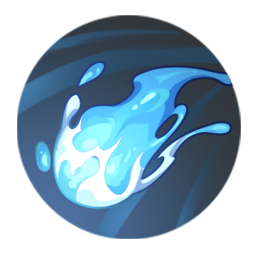
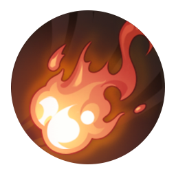
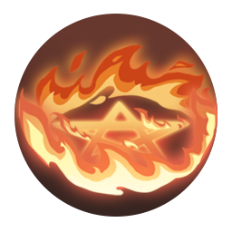
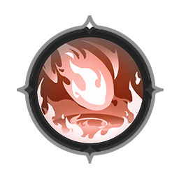
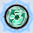

1. Bậc 1 — Pháp Sư (Mage • Cấp 1)
26 Kỹ Năng Gốc Hệ TrượngMột pháp sư tầm xa gây sát thương phép thuật cực lớn và hỗ trợ đồng đội bằng hồi máu, khống chế và triệu hồi.


Bảng Chiến Kỹ Chủ Động — Pháp Sư (Mage Techniques) (13 kỹ năng)
| Icon | Tên Kỹ Năng | Phân Loại Tag | Mô Tả Cơ Chế Thực Chiến Chính Thức Trong Game |
|---|---|---|---|
 |
Water Shot | Sát Thương | Gây Sát Thương Nước 1 lần lên 1 kẻ địch trong phạm vi 4 ô quanh người thi triển. |
 |
Ice Spike | Sát Thương, Trạng Thái Bất Lợi | Gây Sát Thương Nước 1 lần lên tất cả kẻ địch trong khu vực 1x5 ô phía trước người thi triển, với 40% tỉ lệ cơ bản gây Đóng Băng trong 1 lượt. |
 |
Flame Jet | Sát Thương | Gây Sát Thương Lửa 3 lần lên tất cả kẻ địch trong khu vực 1×3 ô phía trước người thi triển. |
 |
Iron Thorn | Sát Thương, Trạng Thái Bất Lợi | Chọn 1 ô trong phạm vi 3 ô quanh người thi triển. Gây Sát Thương Gió 1 lần lên tất cả kẻ địch trong phạm vi 1 ô quanh ô mục tiêu, với 30% tỉ lệ cơ bản gây Bất Động trong 1 lượt. |
| Healing Touch | Đồng Minh, Hồi Máu, Giải Trừ | Hồi máu cho 1 đồng minh trong phạm vi 5 ô quanh người thi triển và giải trừ 1 trạng thái bất lợi hoặc debuff ngẫu nhiên trên người họ. | |
 |
Stonechief Summon | Triệu Hồi | Triệu hồi một Stonechief phía trước người thi triển, nó hành động ngay lập tức. Triệu hồi vật thừa hưởng một tỉ lệ chỉ số của người thi triển và tồn tại tối đa 5 lượt. (Không có hồi chiêu ban đầu) |
 |
Fireball | Sát Thương | Chọn 1 ô trong phạm vi 5 ô quanh người thi triển. Gây Sát Thương Lửa 1 lần lên tất cả kẻ địch trong hình vuông 1 ô quanh ô mục tiêu. |
 |
Cyclone | Kéo | Chọn 1 ô trong phạm vi 6 ô quanh người thi triển. Gây Sát Thương Gió 1 lần lên tất cả kẻ địch trong phạm vi 2 ô quanh ô mục tiêu, hất tung chúng và kéo chúng về ô mục tiêu. |
| Tempest Sphere | Sát Thương | Gây Sát Thương Gió 5 lần lên 1 kẻ địch trong phạm vi 3 đến 5 ô quanh người thi triển. | |
 |
Void Blessing | Đồng Minh, Buff, Hồi Máu | Tăng HP. |
 |
Blazing Fire Ring | Sát Thương | Gây Sát Thương Lửa 1 lần lên tất cả kẻ địch trong phạm vi 2 ô quanh người thi triển. |
 |
Water Assault | Sát Thương | Gây Sát Thương Nước 1 lần lên tất cả kẻ địch trong khu vực 3×4 ô phía trước người thi triển. Sát thương giảm 25% với mỗi đòn trúng tiếp theo lên cùng một mục tiêu. (Gây sát thương nhiều đòn lên mục tiêu lớn.) |
 |
Wind's Delight | Sát Thương | Chọn 1 ô trong phạm vi 6 ô quanh người thi triển. Phóng 7 đợt lưỡi đao gió vào ô mục tiêu và các kẻ địch ngẫu nhiên trong phạm vi 1 ô ở bên trái và bên phải ô mục tiêu. Mỗi đợt gây Sát Thương Gió 1 lần lên tất cả kẻ địch trong phạm vi 1 ô quanh mục tiêu địch. Sát thương giảm 35% với mỗi đòn trúng tiếp theo lên cùng một mục tiêu. |
Bảng Bí Thuật Bị Động — Pháp Sư (Mage Charms) (13 kỹ năng)
| Icon | Tên Kỹ Năng | Phân Loại Tag | Mô Tả Cơ Chế Thực Chiến Chính Thức Trong Game |
|---|---|---|---|
| Elemental Mystery | Chỉ Số | Tăng Thông Thạo Nguyên Tố của người thi triển. | |
| Wind's Whisper | Chỉ Số | Tăng Sát Thương Gió của người thi triển. | |
 |
Dew's Blessing | Chỉ Số | Tăng Sát Thương Nước của người thi triển. |
 |
Heart of Flame | Chỉ Số | Tăng Sát Thương Lửa của người thi triển. |
 |
Unstable Aura | Sát Thương, Đẩy Lùi | Khi Kỹ Thuật của người thi triển gây sát thương lên kẻ địch, có 25% tỉ lệ kích hoạt Aura, gây thêm Sát Thương Gió 1 lần, với 60% tỉ lệ cơ bản đẩy lùi chúng 1 ô. |
| Elemental Body | Chỉ Số | Tăng Kháng Nguyên Tố của người thi triển. | |
| Curse Resonance | Buff | Với mỗi trạng thái bất lợi hoặc debuff mà mục tiêu đang mang, Sát Thương Kỹ Thuật mà người thi triển gây lên mục tiêu đó tăng lên. Cộng dồn tối đa 3 lần. | |
 |
Insight | Chỉ Số | Tăng Tỉ Lệ Trúng Hiệu Ứng của người thi triển. |
 |
Tough Soul | Chỉ Số | Tăng HP của người thi triển. |
 |
Flaming Path | Thiêu Đốt | Khi người thi triển bắt đầu di chuyển trong lượt của mình, có 30% tỉ lệ gây Thiêu Đốt lên các ô trong phạm vi 1 ô quanh người thi triển. |
| Water to Ice | Chỉ Số | Tăng Sát Thương Nước của người thi triển. | |
 |
Mana Surge | Chỉ Số | Tăng Tỉ Lệ Chí Mạng của người thi triển. |
| Gale Shield | Khiên, Đẩy Lùi | Ban một khiên dựa trên HP tối đa của người thi triển khi bắt đầu trận đấu. Khi khiên biến mất, gây Sát Thương Gió 1 lần lên tất cả kẻ địch trong khu vực hình vuông 1 ô quanh người thi triển, với 100% tỉ lệ cơ bản đẩy lùi chúng 1 ô. |
2. Bậc 2 — Thuật Sư (Sorcerer • Cấp 44 Cinder Ridge)
5 Hướng Nguyên Tố & Chính Xác Lớp CaoNhững Hủy Diệt Giả (Destroyer) điều khiển sức mạnh nguyên tố, xuất sắc trong việc quét sạch chiến trường bằng những cơn bão ma thuật tráng lệ. Với trượng và sách phép trên tay, họ có thể tung ra sát thương hủy diệt cực lớn trong chớp mắt. Được ca ngợi là dòng thác nguyên tố biết đi trên chiến trường, mỗi phép thuật họ tung ra đều gây tổn thương nặng nề cho kẻ địch, khiến họ trở thành lõi hỏa lực rực rỡ nhất trong bất kỳ đội hình nào. Dù DEF (Phòng Thủ) của họ tương đối thấp, họ tận dụng khả năng di chuyển linh hoạt và khả năng kiểm soát chiến trường chính xác để tấn công từ khoảng cách an toàn. Dù là dọn dẹp quái nhỏ hay tập trung oanh tạc kẻ địch mạnh, Thuật Sư (Sorcerer) là chuyên gia không thể tranh cãi. Khi nhiều sức mạnh nguyên tố đan xen và bùng nổ khắp chiến trường, đó chính là khoảnh khắc họ tỏa sáng rực rỡ nhất.


Bảng Chiến Kỹ Chủ Động — Thuật Sư (Sorcerer Techniques) (6 kỹ năng)
| Icon | Tên Kỹ Năng | Phân Loại Tag | Mô Tả Cơ Chế Thực Chiến Chính Thức Trong Game |
|---|---|---|---|
 |
Fiery Star Trail | Sát Thương | Gây 2 lần sát thương Doom hệ Lửa cho tất cả kẻ địch trong khu vực hình tròn bán kính 3 ô xung quanh người thi triển. |
| Light of Dawn | Sát Thương | Gây 2 lần sát thương Doom hệ Ánh Sáng cho tất cả kẻ địch trong khu vực 1x8 ô phía trước người thi triển. | |
| Lightning Chain | Sát Thương | Gây 1 lần sát thương Ánh Sáng cho 1 kẻ địch trong phạm vi 4 ô của người thi triển. Hiệu ứng sau đó lan sang 1 kẻ địch ngẫu nhiên trong phạm vi 4 ô của mục tiêu, tối đa 9 lần. Mỗi kẻ địch chỉ có thể bị trúng hiệu ứng lan 1 lần. | |
 |
Energy Burst | Tự Buff | Kỹ Thuật gây sát thương tiếp theo của bạn được tăng Độ Chính Xác và gây thêm 50% sát thương. |
 |
Flickering Stars | Sát Thương, Giải Buff | Chọn 1 ô trong phạm vi 6 ô của người thi triển. Gây 1 lần sát thương Ánh Sáng cho tất cả kẻ địch trong phạm vi 1 ô quanh ô mục tiêu và giải 1 buff ngẫu nhiên của chúng. |
| Frosty Nova | Sát Thương, Hiệu Ứng Xấu | Chọn 1 ô trong phạm vi 3 ô của người thi triển. Gây 1 lần sát thương Nước cho tất cả kẻ địch trong khu vực hình vuông 1 ô quanh ô mục tiêu, với 30% tỉ lệ cơ bản gây Đóng Băng trong 1 lượt. |
Bảng Bí Thuật Bị Động — Thuật Sư (Sorcerer Charms) (5 kỹ năng)
| Icon | Tên Kỹ Năng | Phân Loại Tag | Mô Tả Cơ Chế Thực Chiến Chính Thức Trong Game |
|---|---|---|---|
| Void Bubble | Khiên, Buff | Khi HP của người thi triển lần đầu tiên trong trận chiến giảm xuống dưới 50%, tạo khiên cho người thi triển dựa trên HP tối đa trong 2 lượt và tăng Né Tránh trong 2 lượt (không thể bị giải). | |
 |
Raging Wildfire | Thiêu Đốt | Có 20% tỉ lệ gây Thiêu Đốt cho các ô trong phạm vi khi thi triển Kỹ Thuật hệ Lửa. |
 |
Wind's Shadow | Sát Thương, Debuff | Có 30% tỉ lệ gây thêm 1 lần sát thương Gió, và 50% tỉ lệ cơ bản làm chậm hành động của mục tiêu đi 20% sau khi gây sát thương Gió 3 lần cho một kẻ địch bằng Kỹ Thuật. |
 |
Elemental Harmony | Buff | Với mỗi nguyên tố trong số các Kỹ Thuật đã trang bị gây sát thương, tăng Thông Thạo Nguyên Tố của người thi triển. Cộng dồn tối đa 4 lần. |
| Lightning Mystery | Sát Thương | Mỗi khi Kỹ Thuật của người thi triển gây sát thương cho kẻ địch, có 30% tỉ lệ kích hoạt Thunder Strike gây thêm 1 lần sát thương Ánh Sáng. |
3. Bậc 3 → Bậc 7 — Đại Pháp Sư (Archmage • Lv.82) → Kẻ Hủy Diệt → Pháp Chủ → Ma Đạo
Kiến Trúc Sư Hủy Diệt Diện RộngGiải phóng sức mạnh nguyên tố nguyên thủy của thế giới! Nhấn chìm kẻ địch trong cơn bão mana cho đến khi chỉ còn tro tàn. Dưới đây là bộ Chiến Kỹ & Bí Thuật Bậc 3–7 chuẩn xác của riêng nhánh Trượng Công (gồm Thiên Phạt Thần Quang, Bão Mặt Trời, Bão Tố Gào Thét, Quang Pháp Điện Võng...):
Bảng Chiến Kỹ Chủ Động Bậc 3–7 — Đại Pháp Sư / Kẻ Hủy Diệt / Pháp Chủ (8 kỹ năng)
| Icon | Tên Kỹ Năng | Phân Loại Tag | Mô Tả Cơ Chế Thực Chiến Chính Thức Trong Game |
|---|---|---|---|
| Divine Wrath / Light of Dawn" class="skill-wiki-icon" loading="lazy" /> | Thiên Phạt Thần Quang Divine Wrath / Light of Dawn |
Bậc 3 • Ánh Sáng • T0 | [CD 2 • Đại chiêu đường rộng] Giáng cột thần quang hủy diệt mở màn dọn dẹp cả căn phòng phụ bản chỉ trong 1 lượt. |
| Solaris Storm" class="skill-wiki-icon" loading="lazy" /> | Bão Mặt Trời Solaris Storm |
Bậc 3–5 • Ánh Sáng • T0 | [CD 2 • Phủ rộng toàn vùng] Cơn bão Lửa – Ánh Sáng diện tích cực đại của Đại Pháp Sư / Kẻ Hủy Diệt / Pháp Chủ. |
| Bão Tố Gào Thét Howling Hurricane |
Bậc 3 • Gió • T0.5 | [CD 2 • Đa hit khống chế] Cuốn quái vào tâm bão đa đòn, vừa gom mục tiêu vừa tích sét liên hoàn. | |
| Frosty Nova" class="skill-wiki-icon" loading="lazy" /> | Tân Tinh Băng Giá Frosty Nova |
Bậc 3–5 • Nước • T0.5 | [CD 1–2 • Nổ băng khóa chân] Bùng nổ sóng băng diện rộng đóng băng cứng cả bầy quái trước khi chúng kịp di chuyển. |
 Aqua Vortex" class="skill-wiki-icon" loading="lazy" /> Aqua Vortex" class="skill-wiki-icon" loading="lazy" /> |
Xoáy Nước Hút Tâm Aqua Vortex |
Bậc 3 • Nước • T1 | [CD 1 • Tầm 4 ô, hút vùng 2 ô + 40% Ướt] Tạo xoáy nước ở ô chọn trong tầm 4 ô, kéo toàn bộ quái bán kính 2 ô vào tâm kèm 40% tỷ lệ gốc gắn trạng thái Ướt (Wet) 2 lượt! |
 Radiant Thundergrid" class="skill-wiki-icon" loading="lazy" /> Radiant Thundergrid" class="skill-wiki-icon" loading="lazy" /> |
Quang Pháp Điện Võng Radiant Thundergrid |
Bậc 7 • Ánh Sáng • T0 | [CD 1–2 • Không suy giảm sát thương] Siêu kỹ năng Bậc 7 hệ Ánh Sáng: phủ lưới điện khổng lồ với hệ số cực cao và KHÔNG bị giảm sát thương khi đánh nhiều mục tiêu! |
| Light Surge / Radiant Tide" class="skill-wiki-icon" loading="lazy" /> | Quang Lan (Sóng Thần Ánh Sáng) Light Surge / Radiant Tide |
Bậc 7 • Ánh Sáng • T0 | [CD 1 • Pháo đơn/cụm như Hỏa Quyền] Được ví như 'Ngục Hỏa Chi Quyền phiên bản Pháp Sư' ở Bậc 7 — công phá Boss và dọn quái tốc độ ánh sáng. |
| Burst Arcane Orb / Void Wave" class="skill-wiki-icon" loading="lazy" /> | Bạo Liệt Ma Cầu & Hư Không Quang Ba Burst Arcane Orb / Void Wave |
Bậc 6–7 • Nước • T0.5 | [CD 2 • Dọn sân Thủy-Quang] Kết hợp hệ Nước và Ánh Sáng xuyên qua lớp Kháng Nguyên Tố dày của quái Hỏa Quốc Ignis. |
Bảng Bí Thuật Bị Động Bậc 3–7 — Đại Pháp Sư / Kẻ Hủy Diệt / Pháp Chủ (2 kỹ năng)
| Icon | Tên Kỹ Năng | Phân Loại Tag | Mô Tả Cơ Chế Thực Chiến Chính Thức Trong Game |
|---|---|---|---|
| Void Bubble" class="skill-wiki-icon" loading="lazy" /> | Bong Bóng Hư Không Void Bubble |
Bậc 3 • Nước • T1 | [Nội tại • Khiên khẩn cấp] Tấm đệm sinh mạng thứ hai bên cạnh Khiên Áp Suất Gió cho lối chơi Pháp Chủ thuần công. |
 Radiant Sear" class="skill-wiki-icon" loading="lazy" /> |
Quang Thiêu Rực Rỡ Radiant Sear |
Bậc 3 • Ánh Sáng • T1 | [Nội tại • Nổ Ánh Sáng + Mù 50%] Một trong các Bí Thuật sát thương cao nhất Bậc 3: xác suất lớn giáng ST Ánh Sáng kèm hiệu ứng Mù (khiến Chiến Kỹ địch có 50% tỷ lệ gây 0 sát thương)! |